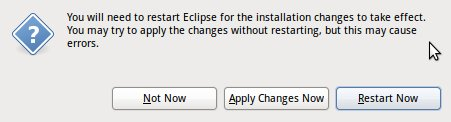

Jetty WTP Plugin/Jetty WTP Install
Installing the WTP Adaptor
To install the WTP Adaptor, complete the following steps.
- Open Eclipse.
- In the taskbar at the top of your screen, click Help -> Install New Software. The Available Software dialog box opens.
- In the Work with: field, type one of the URLs provided below:
- Stable releases of the plugin: http://download.eclipse.org/jetty/updates/jetty-wtp
- More bleeding edge versions of the plugin (each successful build on Hudson): http://download.eclipse.org/jetty/updates/jetty-wtp/development
- Press Return.
- In the Name/Version box below, select the box for Jetty WTP Adaptor Site.
- Click Next.
- The Install Details dialog box opens.
- Click Next again.
- The Review Licenses dialog box opens.
- Accept the terms and click Finish.
- The Installing Software dialog box opens, displaying progress for installing the WTP adaptor. When it completes, the Software Updates dialog box opens with a message that you need to restart Eclipse to complete the installation.
- Click Restart Now. 
{kind=link}
{kind=link}
{kind=link}
{kind=link}
{kind=link}